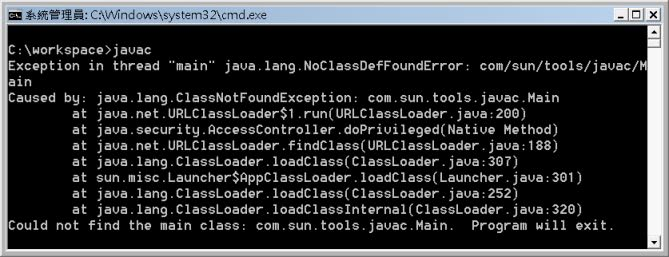
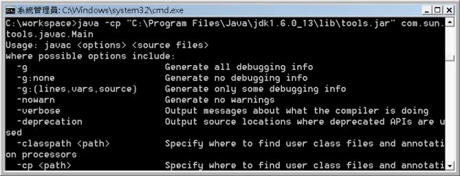

在 你執行的是哪個 JRE？ 中有提到一段：JDK中多數工具程式，本身就是用Java寫的。
很有趣不是嗎？Java原始碼需要編譯器編譯為.class檔，而這邊卻跟你說Java編譯器是Java寫的？這不是雞生蛋還是蛋生雞的問題嗎？是先有Java編譯器，還是先用Java寫個編譯器？
答案是先有原生編譯器，一開始編譯器是可能使用C寫的，而後用Java程式碼寫個編譯器，用原生編譯器來編譯Java寫的編譯器，然後就有了Java版的編譯器。事實上，JDK多數的工具程式，都是使用Java語言所撰寫的。
但以Windows為例，你在JDK的bin目錄中，所看到的不是.exe的原生可執行檔嗎？其實那些都是假貨，或正確的來說，那些都是方便你不用輸入一長串指令，以作業系統原生執行檔包裹的包裹器（Wrapper）。真正的編譯器等工具程式，其實是位於JDK目錄底下lib目錄中的tools.jar。
舉個例子來說，如果你的PATH是指向JDK的bin目錄，當你鍵入javac指令時，一開始是由作業系統依PATH找到javac可執行檔，而後該可執行檔依所包裹的真正指令與引數，呼叫、載入、執行tools.jar中對應的.class檔案。
你可以將tools.jar更名為任意名稱，例如tools_back.jar，而再度執行javac指令時，會出現以下的錯誤訊息：

真正Java編譯器的程式進入點，其實是在com.sun.tools.javac.Main這個類別。執行javac時，其實javac可執行檔所包裹的指令，相當於：
java -cp "C:\Program Files\Java\jdk1.6.0_13\lib\tools.jar" com.sun.tools.javac.Main
你可以將方才更名的檔案復原為tools.jar，自行執行以下的指令，就會看到直接鍵入javac時的結果：

Java本身的目標之一是跨平台，其許多工具程式本身就實現了這個理念，也因為許多工具程式本身是Java所撰寫，因此JDK本身必須附帶Private JRE，如此即使在沒有另行安裝Public JRE的情況下，也可以執行JDK相關工具程式。